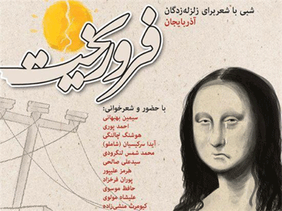

|
|
شب شعر سیمین بهبهانی ، آیدا سرکیسیان و 9 شاعر دیگر برای کمک به زلزله زدگان آذربایجان
دو شنبه27 شهریور 1391
شهرزاد نیوز: کافه کتاب لاله زار میزبان شاعرانی چون سیمین بهبهانی، آیدا سرکیسیان (شاملو)، احمد پوری، هوشنگ چالنگی، محمد شمس لنگرودی، سیدعلی صالحی، هرمز علی پور، پوران فرخزاد، حافظ موسوی، علیشاه مولوی و کیومرث منشی زاده خواهد بود. این شعرا دست به دست هم داده اند تا با برگزاری شب شعری به یاری زلزله زدگان آذری بشتابند.
علاوه بر شعر خوانی، فیلم "فروریخت" از گروه "جامپ کات" به نمایش در خواهد آمد. این فیلم در مورد زلزله اخیر در آذربایجان است.

محل برگزاری این شب شعر ، کافه کتاب لاله زار واقع در خیابان سعدی، چهارراه مخبرالدوله، ضلع شمال شرقی، پشت ایستگاه مترو سعدی، خیابان نقاش باشی است و زمان آن جمعه 24 شهریور ساعت 6 عصر می باشد.